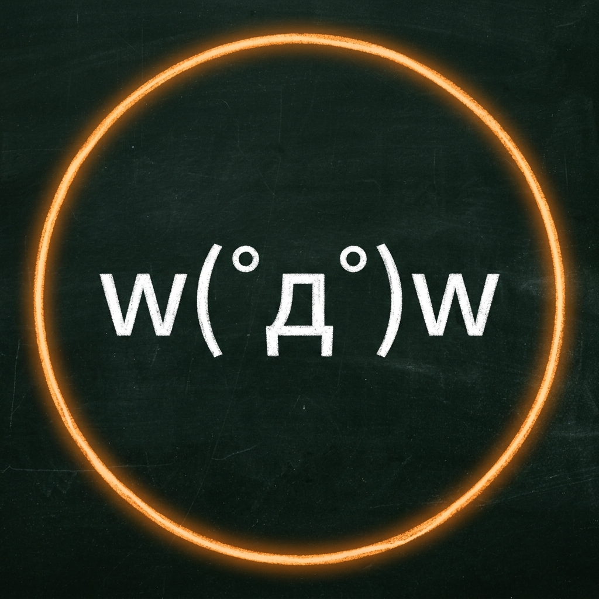
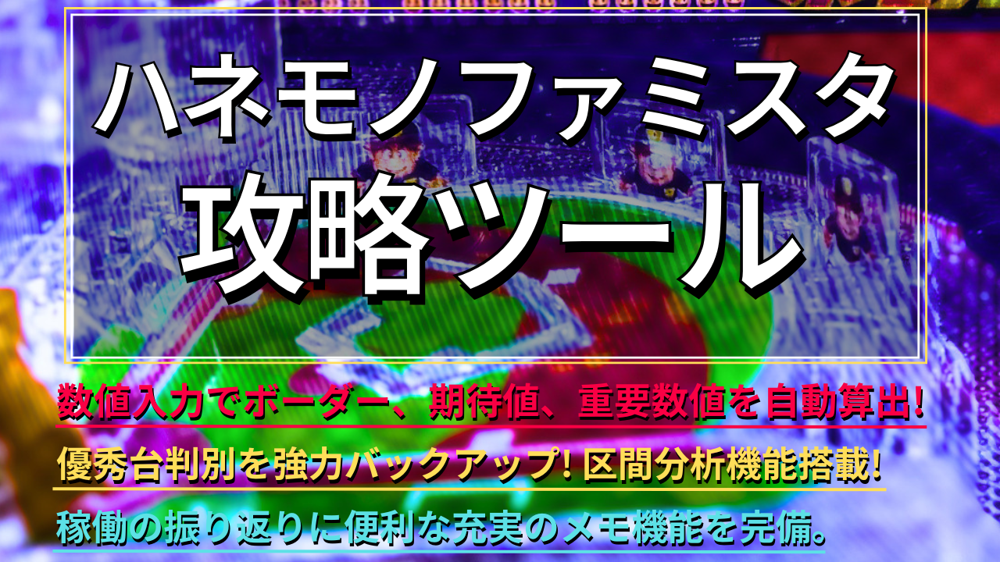

PACHINKO TACTICSの理念
「パチンコは、戦略（タクティクス）で面白くなる。」
現在のパチンコは、美しい映像とギミックによる最高峰のアトラクション体験を提供してくれます。しかし、パチンコ本来の面白さは「自分の力（技術介入）と知恵（戦略）でお金を増やすこと」にあると私は考えています。
PACHINKO TACTICS（パチタク）では、その後押しをするべく、ハネモノを中心とした攻略ツールや、実戦の経験・データから導き出した攻略考察を提供します。
■ 発信のスタンス
当サイトが発信するのは、メーカー公表値のような無機質で「完璧な正解」ではありません。実戦経験と蓄積したデータを根拠に、「100%の正解ではないかもしれないが、私はこう睨んでいる」という、現場の熱量を持った独自の考察をぶつけていきます。
■ ツールの役割と「区間」へのこだわり
当サイトの攻略ツールは、実戦から導き出した独自ロジックに基づいています。累計の平均値だけでは見抜けない台の「ムラ」や「真の実力」を、中央値である「区間データ」を可視化することで判別します。記憶や直感という曖昧なものに頼らず、数値による確かな「根拠」を提供することがツールの役割です。
■ 最終判断は「あなた自身」に
当サイトが提供するツールや考察は、あくまであなたの実戦をサポートするためのものです。最終的にその数値を見て「粘るか、引くか」の判断を下すのはユーザー自身であり、当サイトが勝率や利益を絶対的に保証するものではありません。遊技は自己責任のもと、ご自身の戦略で楽しんでください。
■ 運営スタンス
当サイトは、パチンコ攻略をより多くの人により楽しんでもらうことを目的としているため、すべて無料で提供しています。今後、サイトの維持と開発のために広告を配置する予定ではありますが、皆様の攻略体験を邪魔しない範囲にとどめますので、ご理解いただけますと幸いです。
サイト管理人【ワオ(wow)】のプロフィール

ハネモノ・海物語・甘デジを主戦場とする歴15年のパチンコ攻略好き。実戦経験を詰め込んだ攻略ツールと、現場のリアルな考察情報を発信中。少しでも皆様の立ち回りの手がかりになれば嬉しいです。
皆様からのフィードバックや不具合報告、追加希望機種などは下記Xアカウントまでお寄せください。
